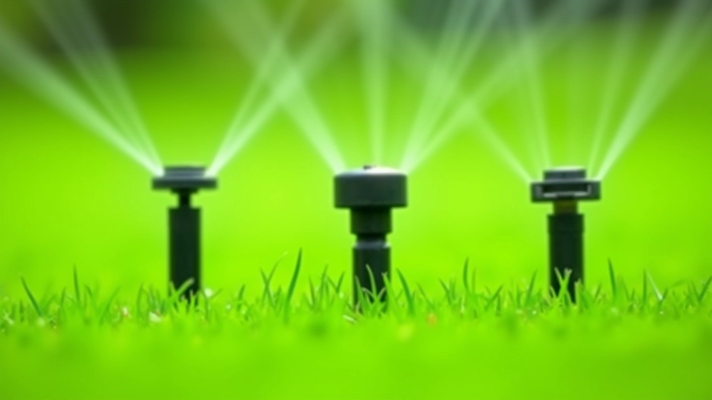
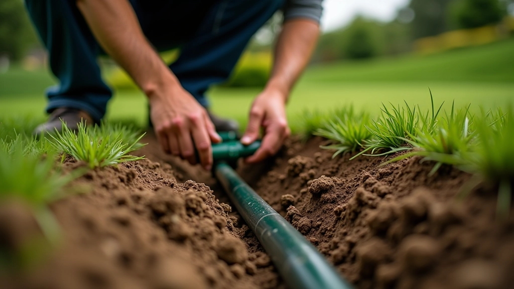
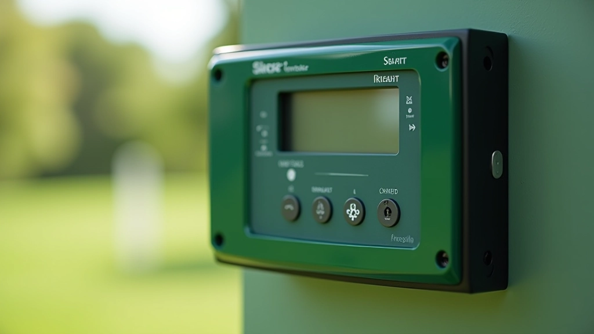

تحليل التربة والتسوية: الخطوة الأولى الصحيحة
فهم خصائص التربة واختبارها ضروري. نتناول كيفية قراءة نتائج التحليل واستخدامها لتحسين ملعبك.
نظام الري الجيد يوفر المال والماء. نناقش الخيارات من الري اليدوي البسيط إلى الأنظمة الآلية الذكية.

الماء هو أساس ملعب كروكيه صحي. لكن ليس كل الماء متساوٍ — الكمية والتوقيت والتوزيع كل هذا يحدث فرقاً حقيقياً. نظام ري سيء يعني عشب ضعيف وفواتير مياه عالية. نظام جيد؟ يعني ملعب أخضر لامع مع تكاليف معقولة.
الخبر السار: لا تحتاج إلى ميزانية ضخمة. ستجد أنه بغض النظر عن حجم ملعبك أو موقعك، هناك حل ري مناسب لك. السؤال الوحيد هو: أي واحد؟
معظم الملاعب تستخدم أكثر من 40% من المياه المتاحة على الري. بدون نظام صحيح، تضيع النصف منها.
لديك ثلاثة خيارات أساسية عند اختيار نظام ري. كل واحد له مميزات وعيوب، وكلها تعمل — الفرق في الجهد والمال والكفاءة.
تقليدي، بسيط جداً. خرطوم + شخص = ري. مناسب للملاعب الصغيرة جداً. لكنه يأخذ وقتاً، وتتفاوت كمية الماء من مكان لآخر.
رؤوس رش مثبتة على الأرض، تعمل بمحرك كهربائي أو بطارية. تغطي مساحة موحدة. أفضل من اليدوي بكثير، وتعطيك تحكماً أفضل.
متحكمات مبرمجة، مستشعرات رطوبة، حتى تكامل مع الطقس. تعطيك دقة عالية جداً وتوفير حقيقي في المياه والكهرباء.


تصميم جيد يبدأ بقياسات صحيحة. لا تستطيع اختيار حجم النظام الصحيح إذا لم تعرف حجم ملعبك ونوع التربة والمناخ المحلي.
احسب المساحة بالمتر المربع. لاحظ المناطق المرتفعة والمنخفضة — الماء يتحرك بالجاذبية.
التربة الرملية تحتاج ري أكثر. التربة الثقيلة تحبس الماء. اختبر سرعة الصرف في موقعك.
العشب الكروكيه يحتاج حوالي 25-38 ملم ماء أسبوعياً حسب الموسم. لا تفرط — تربة رطبة جداً تقتل الجذور.
نعم، يمكنك توفير المال. إليك كيف: استخدم متحكمات بسيطة لا تتطلب كهرباء كثيرة. اختر رؤوس رش بكفاءة عالية. وركب المستشعرات — قد تبدو غالية في البداية، لكنها توفر ماء حقيقياً.
توقف النظام تلقائياً عند هطول الأمطار. بسيط جداً، وتوفير بـ 20-30% من استهلاك المياه.
الساعة 5-7 صباحاً أفضل من منتصف النهار. خسارة أقل بسبب التبخر، وامتصاص أفضل.
رؤوس الرش الحديثة توفر 15-25% أكثر من القديمة. الاستثمار يستحق العناء.

هذا المقال يقدم معلومات عملية فقط وليس استشارة متخصصة. الظروف تختلف حسب الموقع والمناخ والتربة. نوصي باستشارة متخصص ري محلي قبل تثبيت أي نظام جديد للتأكد من أنه يناسب احتياجاتك الخاصة.
تصميم نظام ري فعال ليس معقداً كما يبدو. ابدأ بالقياسات والملاحظات. اختر النوع الذي يناسب ملعبك. ثم اختبره — وعدّل حسب الحاجة.
النقطة المهمة: نظام جيد يحفظ وقتك وماءك وفلوسك. إنه استثمار في صحة ملعبك طويل الأمد.
العودة إلى الفئة